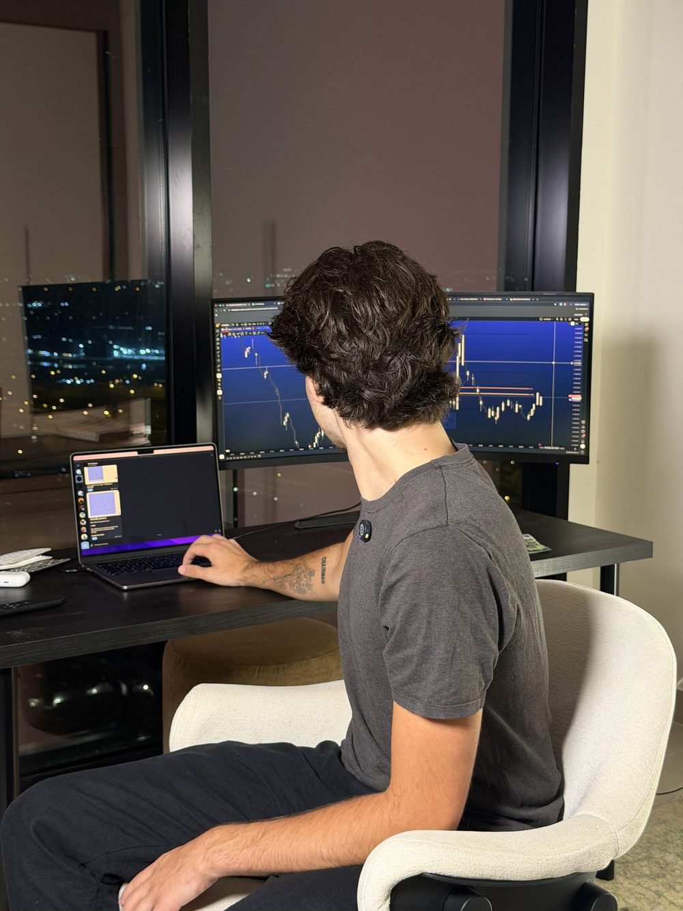

Free to join. Every position I open, posted in real time with the full reasoning, plus the complete training on my methodology — from a full-time trader in Dubai with his own capital on the line. Built for beginners, followed by experienced traders.
Join Free Group NowNY OPEN in --:--:-- — every trade I take goes to the group
Proof
Real screenshots from members following the trades. Posted as they come in.
Owner: Jonathan — three real member screenshots (MT5 or chat), with their permission.
Every new member gets welcomed personally. Before you're added I ask three quick questions — where you're based, whether you've traded before, and what you're after — so I know how to help you.
I'd rather have people who actually want to learn than a big number. The group is free, but it's not a broadcast list.
Click the button, send me a message, and if it's a fit you'll be inside the same day.
Your first trade with the group could be this week.
New members welcomed every day.

Bonus
Included with the group: the full training on how I trade — the same method behind every position I post. Completely free.
So you don't just copy the trade. You understand it, and you learn to spot the setups yourself.
Account, platform and your first position, from zero. The same onboarding every member goes through.
What I look at before a trade, and why. The reasoning behind every setup I post.
My rules for every position: where I get in, where I take profit, and where I'm wrong.
The 15–20 minutes a day, step by step: from the message in the group to the position on your account.
Owner: Jonathan — module names, number of videos and minutes.
Inside the group
No course to buy, no upsell behind it. You get the trades as I take them, the plan behind each one, the training, and my team when you need a hand.
Real messages from Open TradeStart on Telegram
Owner: Jonathan / CM — screenshots of member messages, names blurred.
This is why the group, the trades, the training and the support are 100% free.
I partner with a regulated broker, and they compensate me when members choose to trade with them — which means you get everything at no cost, ever. No subscription. No upsell. No hidden fee.
We never touch your money. Your funds stay in your own brokerage account, in your name. We don't manage accounts and we don't take deposits.
Want to see how I trade the markets every day, alongside 1,343 other traders?
Every position I open, in real time, with entry, target, stop and the reasoning — plus the complete training on my methodology. All free.
Click below, send me a message, and I'll personally welcome you.
See how it compares to other trading groups.
Every position I share comes with the full plan: entry, target, stop and why. Copy the levels, watch how it plays out, and learn to see the setups yourself.
Get the setup
Copy the levels
Learn the why
In the group already? Tell people how it's going.
Trading carries a high risk of losing money. Contracts for difference and leveraged foreign exchange products are complex instruments, and a large majority of retail investor accounts lose money trading them. Consider whether you understand how these products work and whether you can afford to take the high risk of losing your money.
Nothing in the Telegram group or on this page is investment advice, a personal recommendation, or an offer to buy or sell any instrument. Content is educational and reflects one trader's own decisions. Past performance is not a reliable indicator of future results.
Commercial disclosure: we have a referral arrangement with a broker and are paid a fee when someone opens an account through our link. This is how the group is funded. We do not hold, manage or have access to client funds at any time.